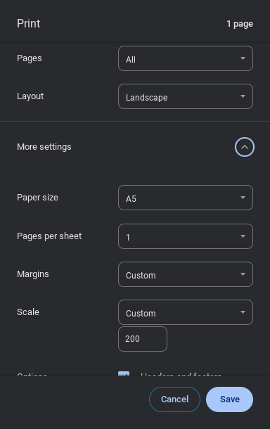
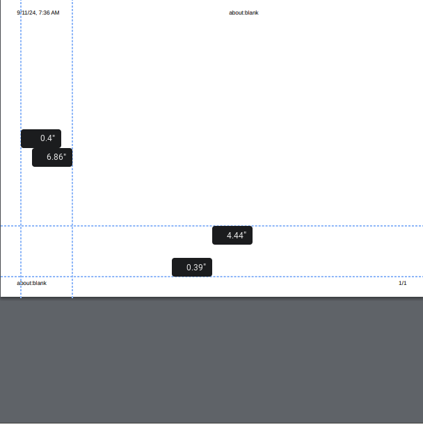
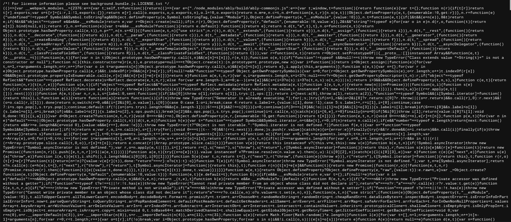

Temporarily Disabling Classwize on v127
Setup (you only have to do this once)
- Go to about:blank
- Press Ctrl+P
- On the right, change your printing settings to the ones in this image:

- On the left, drag either of the vertical dotted blue lines towards the other side of the paper until you can’t anymore.
- Do the same for either of the horizontal lines. After doing these two steps, the left side of the printing window should look like this, with the blue lines creating a small square in one of the corners. (the square doesn’t have to be in the bottom left corner like it is in this image, just a square of the same size on one of the corners of the paper)
 - Congratulations! You’ve optimized your printing settings to crash Classwize and prevent your teachers from spying on you!
The actual exploit
- Copy this link and paste it in your URL bar: chrome-extension://ifinpabiejbjobcphhaomiifjibpkjlf/background/background.bundle.js
- Press Enter, and you should now be on a page that looks something like this:
 - Press Ctrl+P, and the extension will begin to hang. Congratulations, you’ve crashed Classwize! The extension should stay crashed for about half an hour.
If you’ve added Classwize to your extension tray (steps below,) you can be alerted when the extension starts working again by simply clicking on the Classwize icon in the top right. If the extension starts working again, the Classwize dropdown will appear. If this does happen, restart Classwize (steps below) and crash Classwize again.
Restarting Classwize
If one of your teachers asks you about why you aren’t showing up on Classwize (or you just want to un-crash the extension), follow these steps.
- If you haven’t already, click the puzzle piece in the top right corner, and next to “Linewize Connect,” click the pin button. If the pin is already blue, you don’t need to do this step.
- Right click on the Classwize icon in your extension tray. The icon looks like this:
- Click on “Manage Extension.”
- Scroll down to the “Allow access to file URLs” toggle, and click it twice.
- Good job, you’ve restarted Classwize!